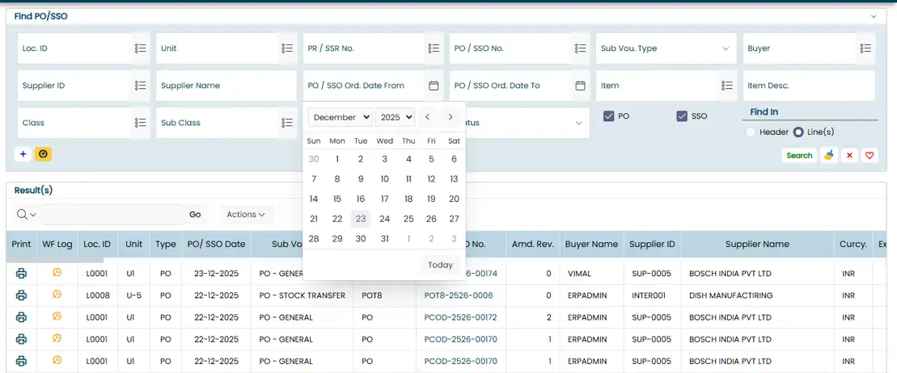

<div data-category="Operating Instructions" data-title="How to use Calendar" data-updated="December 01, 2025" data-contributors="RoadmapIT" data-breadcrumb="Home,Operating Instructions,How to use Calendar">
  <div class="page-content">
    <p>This screen explains how to enter dates in date fields either by manual entry or by using the calendar option available in the application.</p>

    <!-- Use Calendar -->
    <h2>How to use Calendar:</h2>
    <ul style="list-style-type: none; align-content: center">
      <li class="mouse-icon">In date fields, dates can be entered either manually or by using the calendar icon.</li>
      <li class="mouse-icon">Click on the calendar <i class="bi bi-calendar4 fs-5 mx-2 text-muted"></i> icon next to the date field.</li>
      <li class="mouse-icon">A calendar will appear.</li>
      <li class="mouse-icon">Click on the required date.</li>
      <li class="mouse-icon">The selected date will appear in the text field.</li>
    </ul>
    
    <h2>Example:</h2>
    <ul style="list-style-type: none; align-content: center">
      <li class="mouse-icon">Click on the calendar icon.</li>
      <li class="mouse-icon">A calendar will open.</li>
      <li class="mouse-icon">Click on the desired date.</li>
      <li class="mouse-icon">The date will appear in the text field.</li>
    </ul>
  </div>
</div>
